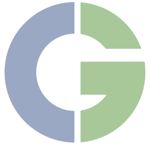
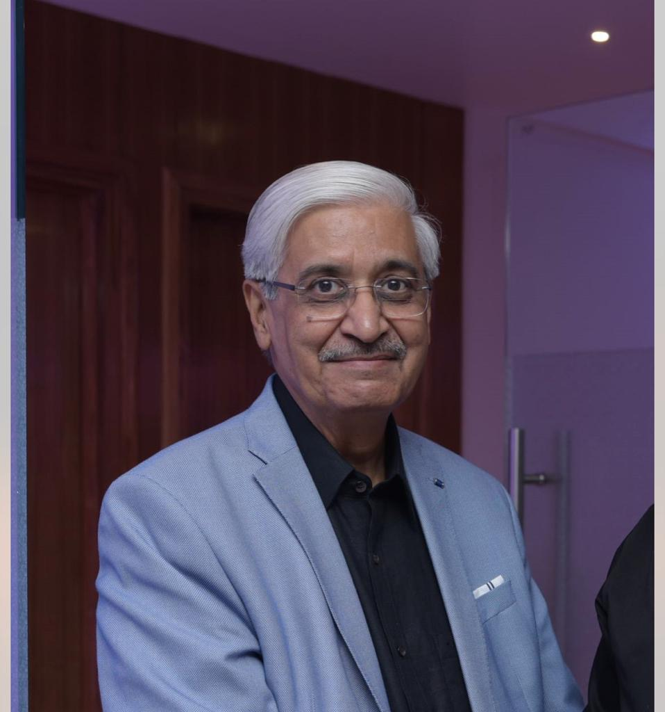

2012
Unit III Established
India’s first fully automatic radiator production line, Naini, Prayagraj.
Learn More
Engineered at our facility for the transformers that keep industries moving.
Who We Are
From a French multinational MOU in 2012 to one of India’s largest radiator suppliers, our journey has been built one transformer at a time.
Siemens, GE, Hitachi, Toshiba and PGCIL trust us to build the radiators inside transformers that cannot afford to fail: thirteen years of unbroken supply, engineered to the highest class approved in the country.
From engineering and manufacturing to delivery and long-term support, we stay close to every project, treating each dispatch as one more transformer that has to run without excuses.
 Image 01: Radiator Detail
Image 01: Radiator Detail Image 02: Transformer + Radiators
Image 02: Transformer + Radiators Image 03: Engineering / Inspection
Image 03: Engineering / Inspection Image 04: Power Grid / Substation
Image 04: Power Grid / SubstationReliable cooling for maximum transformer performance: the core range, available in flanged, non-flanged and offset options.
View Details
Compact design for space-constrained installations: flexible mounting where a standard radiator won't fit.
View Details
Designed for complex transformer configurations: curved inlet & outlet connections for unique mounting arrangements.
View Details
Custom engineered for flexible transformer connections: special inlet & outlet orientations, superior cooling efficiency.
View Details
India’s first fully automatic radiator production line, Naini, Prayagraj.
Learn More400 kV class transformers & reactors, via Alstom T&D.
Learn MoreIndia’s highest transmission voltage class, via Siemens T&D.
Learn MoreSupplied to new international markets, strengthening global presence.
Learn MoreExpanded product portfolio and manufacturing capabilities.
Learn MoreBuilding deeper partnerships and scaling for the future.
Learn MoreContinuing to innovate for a more connected, sustainable tomorrow.
Learn More

Welders, line engineers and quality inspectors, building pressed-steel radiators for transformers that run at 765 kV, from Naini, Prayagraj.

Radiators running in 765 kV substations
India's first fully automatic radiator line
Teams that have been here since 2012
Send a drawing, a spec or just the kV class and quantity: we quote from either.

Quote pending: the Chairman’s note has not been supplied yet.
Quote pending: the Managing Director’s note has not been supplied yet.

Certified environmental management, a ZED Gold rating and a workforce drawn from the district we build in.
See what we’re doing